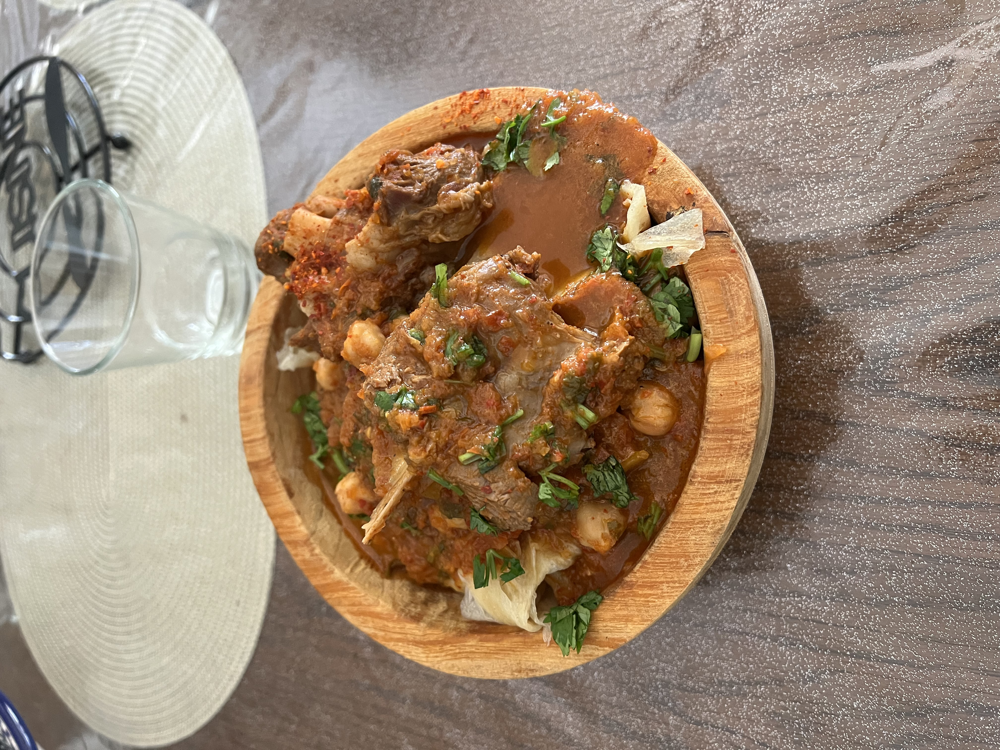

Chakhchoukha
Chakhchoukha or chekhechoukha is a traditional Algerian dish made from torn or rolled pieces of
cooked semolina dough that are served in a flavorful tomato-based sauce. The dish consists of
small pieces of rougag mixed with marqa, a tomato stew.

Ingredients
- 2 lbs beef meat
- 1 big onion, chopped
- 3 cloves garlic, minced
- 2 tbsp olive oil
- 1 tsp Ras al hanout
- 1/2 tsp black pepper
- 1/2 tsp black pepper
- 1 tbsp tomato paste
- 1 tbsp tomato paste
- 2 medium tomatoes, grated
- 2 cups chickpeas, soaked overnight and rinsed
To make the thin flatbread which is Rougag or Trid sheets, please check the recipe in link down below
Flatbread Link
Steps:
- First, prepare the sauce.
- In a saucepan over medium heat, put olive oil.
- Add onion, garlic, salt, pepper, Ras al Hanout, paprika, tomato paste and let cook for 5 minutes.
- Add grated tomato and chickpeas and let cook for 10 to 15 minutes.
- Add Jalapeño or any other hot pepper(optional)
- Add boiled water to slightly cover the meat.
- Let cook for about 45 minutes or until the meat and chickpeas are cooked.
- In meanwhile, tear the sheets of Rougag with hands into small pieces.
- Place the pieces of Rougag in the top of a steamer and steam for about 5 minutes.
- Put them in a serving dish and set aside.
- Chech on the meat sauce and adjust the seasoning. Add salt if needed.
- Once the meat and chickpeas are cooked, turn off the heat (the sauce should be reduced and thick).
- Place the meat and chickpeas on the Rougag pieces in the serving dish.
- Add the sauce on top.